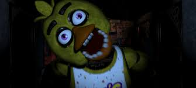
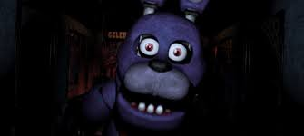
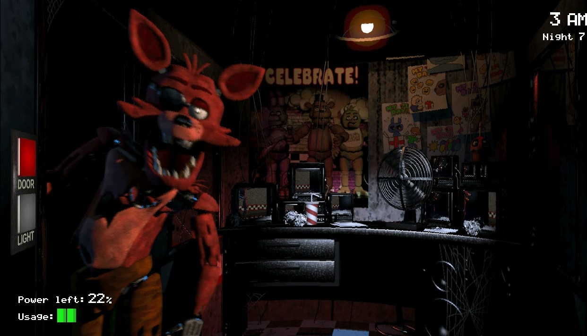

Freddy Fazbear's Pizza was once a popular restaurant for adults and children alike. However, due to a number of incidents - including the kidnapping and murder of five children by a man wearing a costume similar to Freddy Fazbear, sanctions by the Health Department over the numerous reports of the mascots having a "rotting smell" (as well as mucus and blood in and around their eyes and mouths), and "The Bite of '87" - the pizzeria has fallen on hard times. Freddy Fazbear's Pizza is set to close by the end of the year, as potential buyers do not want to be associated with the restaurant's tainted reputation. The four mascots - Freddy Fazbear, Bonnie, Chica, and Foxy - have a particularly foul stench, which concerned parents have likened to "reanimated carcasses." The Phone Guy remarks in the 1st Night phone message that the animatronics have not had a bath in their twenty-plus years of service, which would explain the nasty odor. The stench could also be attributed to a theory that the missing children were stuffed into the animatronic suits after they were killed, the rotting bodies producing the scent of decay. Due to the risk of their servos locking up from disuse, the animatronics have been left in a "free roaming mode" at night over the years. They used to be able to roam freely during the day as well, but the "Bite of '87" prompted the pizzeria to put a stop to this. The Phone Guy has unfortunately been captured, as heard during the phone call on The 4th Night, and is implied to have been stuffed into a suit. There is also speculation about a more complicated and twisted version of the plot, due to the phone message heard during The 5th Night
| CHICA | FREDDY | BONNIE | FOXY |
|  |  |  | |
Chica is one of the five antagonists in Five Nights at Freddy's. Chica is a robotic children's entertainer housed at Freddy Fazbear's Pizza, along with Freddy and Bonnie. She is the back-up singer in the Fazbear band. During the night, along with the other animatronics, she will try to force any human or endoskeleton she sees into an animatronic suit. |
Freddy Fazbear is the main antagonist in Five Nights at Freddy's. He is an animatronic bear who is left in a "free roaming mode" at midnight, when he wanders around Freddy Fazbear's Pizza, along with the other animatronics, until 6 AM. He forcibly stuffs any human he encounters after hours into a Freddy Fazbear suit, as do the other animatronics. |
Bonnie is one of four main antagonists in Five Nights at Freddy's. Like Freddy and Chica, Bonnie is a children's entertainer during the day, housed at Freddy Fazbear's Pizza. However, at night, he acts as the other animatronics do: hunting down any human in the area and forcibly stuffing them into a Freddy Fazbear suit, killing them. | Foxy is an antagonist in Five Nights at Freddy's. His starting location is behind the curtain in Pirate Cove, from which he emerges and sprints towards The Office to attack the player on any given night if he is monitored too much or too little (with the exception of The 2nd Night) through the security camera. Unlike other animatronics in the game, Foxy will hide for a while before coming to attack the player. It is currently unknown as to why Foxy is the only animatronic who hides. There are two theories on why he does this: |